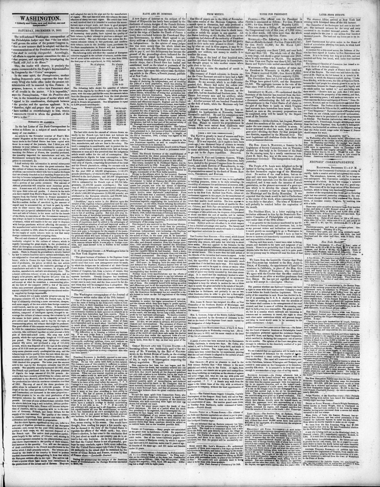

HAYTI AND ST. DOMINGO.
https://www.loc.gov/resource/sn83045784/1852-12-18/ed-1/?sp=5

See the original pageVer la página original
The official paper of France (the Moniteur) lately contained an article from which we translate the following paragraphs:
“The Emperor Faustin I, immediately upon his accession to power, manifested his hostile views against the people of the eastern part of the island of Hayti, who, after the fall of the President Boyer, in 1844, had proclaimed their independence and established the Dominican Republic.
“The first essay of the Haitien Emperor, however, was not fortunate; defeated at the battle of the Ocoa, in 1849, his armies were entirely broken up, and he was obliged to retire, followed by the Dominicans, who would have carried their successes much further had it not been for the friendly mediation of the Powers which intervened in the conflict.
“On this occasion France was naturally called upon to act the first part. In 1843, in fact, before the division of the island had taken place, and when the eastern part was yet under the Haytien yoke, the inhabitants of the province of St. Domingo had, of their own accord, invoked the protection of the King of the French, and offered, on this condition, to deliver up to him the peninsula and bay of Samana.
“This treaty, accepted by M. Ferdinand Barrot, was ratified at Paris early in 1844. Soon after France fulfilled the first engagement it had assumed, by causing the Dominican movement to be supported by Vice Admiral de Moges, commander of the West India squadron. Strong in this support, the Dominicans were enabled to maintain their separation, and on the 27th February, 1844, hoisted the national flag.
“When, however, the French Government came to be called upon to carry out the conditions of the treaty of 1843, the Chamber of Deputies was not favorably inclined to it; they found that it would be dangerous to accept a military post in the proximity of a colony which had so cruelly escaped from us, and in the possession of which an attempt might be made to establish ourselves; moreover, and above all, the Chamber did not like to take up a position which seemed to engage us to assume in future the permanent protectorate of the Dominican Republic.
“These considerations prevailed: the treaty of 1843 was abandoned; the peninsula of Samana was not occupied; but France, nevertheless, remained the declared protectress of the new State, and it was in this capacity that she afterwards offered her mediation to put an end to the contest between the Haitiens and the Dominicans.”
The readers of the Intelligencer will not have forgotten that this was the project which was defeated by the unremitted vigilance and resolute conduct of the lamented Commodore Knox. The scheme is far from being abandoned, as the public may soon have occasion to perceive. England has already secured an island (the island of Alta Vela) in the same quarter, but having an eye to an establishment on that very point of Samana.
This story also ran inEsta historia también apareció en
Daily National Intelligencer · Washington City [D.C.] · December 18, 185218 de diciembre de 1852
How to cite this articleCómo citar este artículo
Weekly National Intelligencer. (1852). Washington [D.C.], December 18, 185218 de diciembre de 1852. DR in the American PressRD en la Prensa Norteamericana. Library of Congress, Chronicling America: https://www.loc.gov/resource/sn83045784/1852-12-18/ed-1/?sp=5
ReferencesReferencias
Library of Congress, Chronicling America: Weekly National Intelligencer, December 18, 185218 de diciembre de 1852.
Send an observationEnviar una observación
Does this article connect with your family, your town, or something you know? Did we get something wrong? Write to us. Observations go to the editor's inbox and are read by a person.¿Este artículo conecta con su familia, su pueblo o algo que usted conoce? ¿Nos equivocamos en algo? Escríbanos. Las observaciones llegan al buzón del editor y las lee una persona.
Send observationEnviar observación